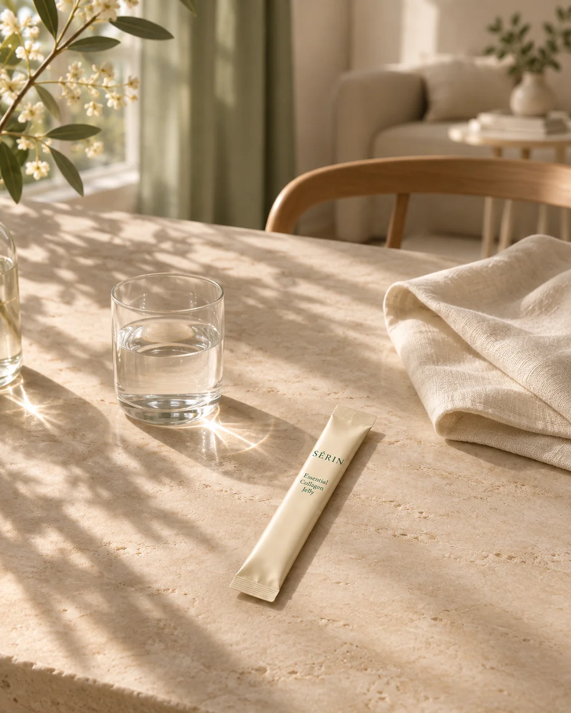
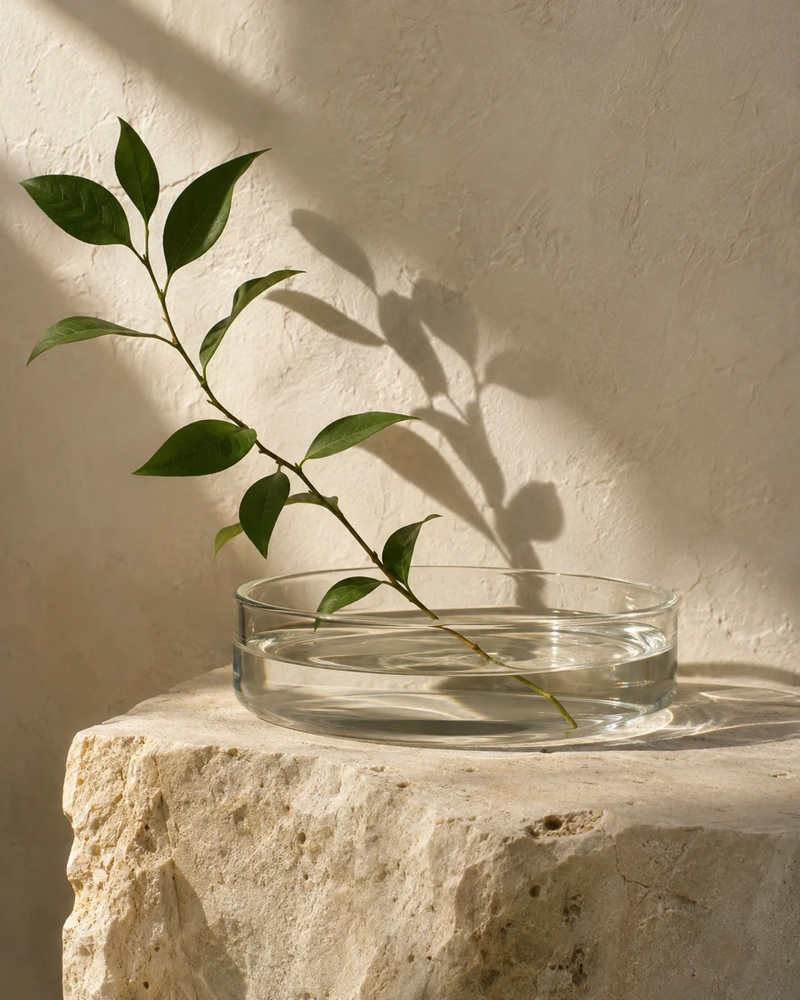
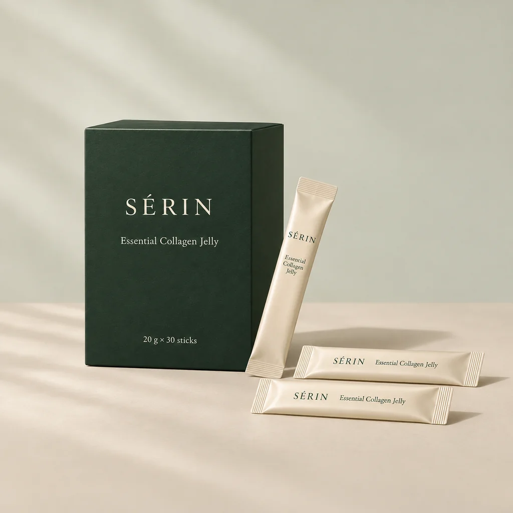
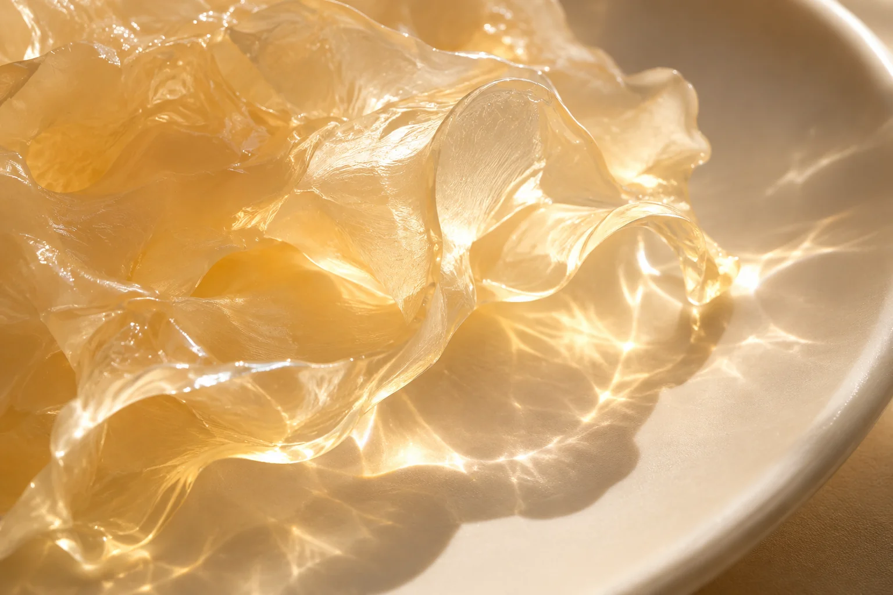
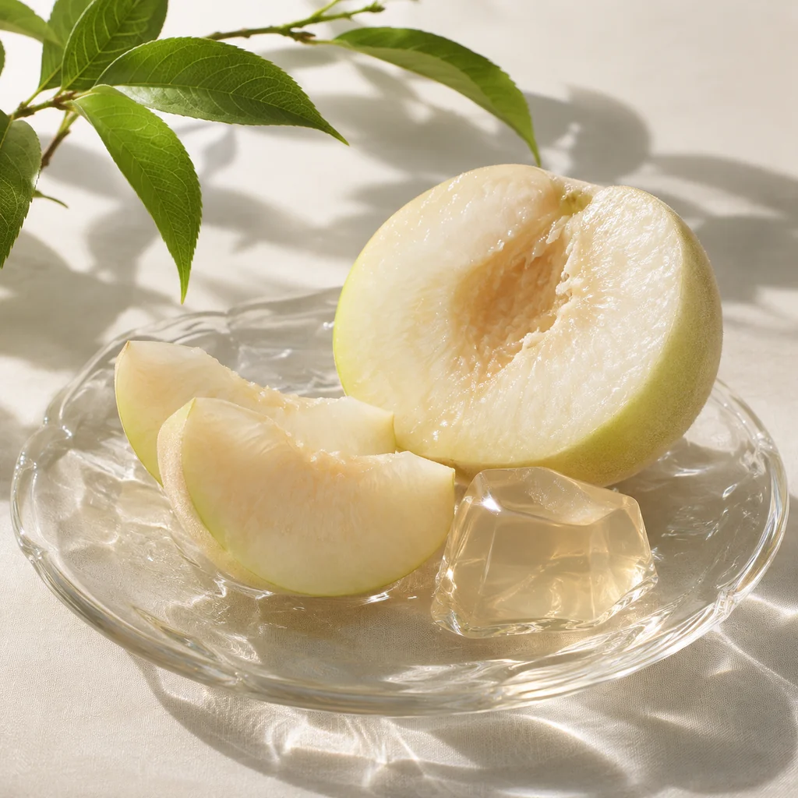
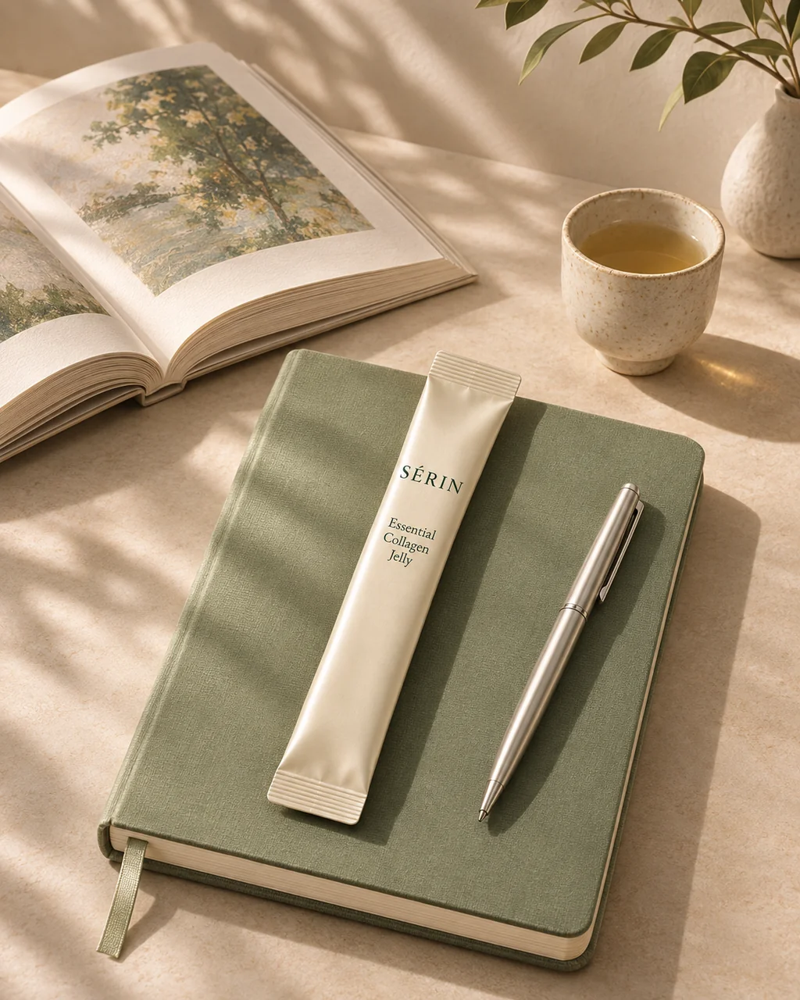
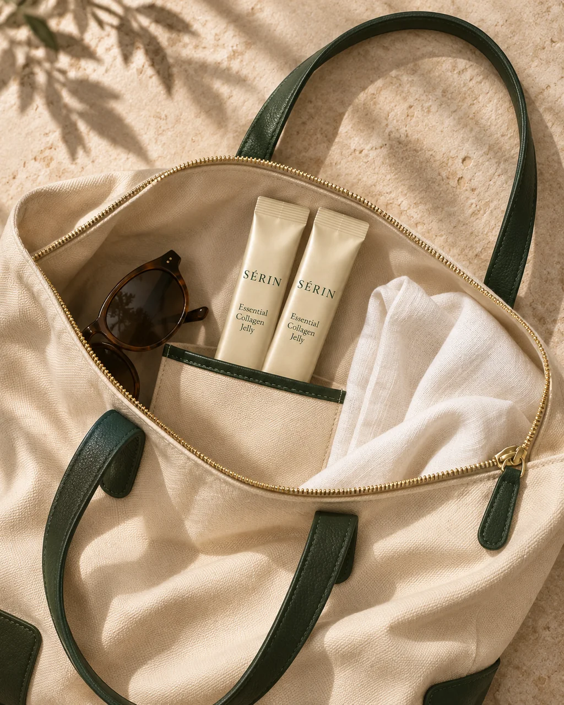
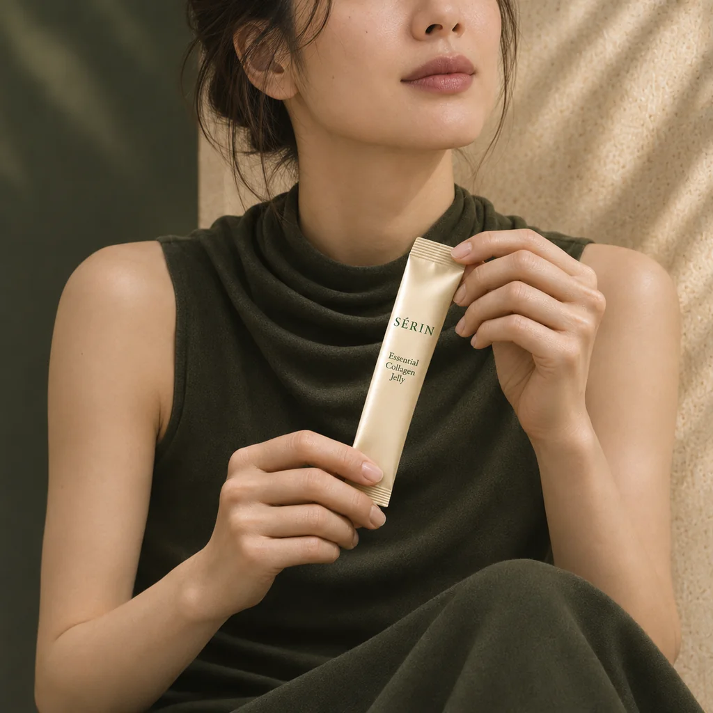

하루를 시작하는 나의 여백.
바쁜 준비 사이, 자신을 한 번 더 생각하는 시간.
제품 이야기

많이 담는 것보다,
무엇을 왜 담았는지가 중요합니다.
SÉRIN은 원료를 선택하는 이유부터
매일 손이 가는 한 포의 감각까지 생각합니다.
불필요한 약속은 덜고, 알아야 할 정보는 분명하게.
자신을 돌보는 일이 더 복잡해지지 않도록.
우리의 기준은 언제나 일상의 본질에 있습니다.
본질에 집중하는 선택
숨김없이 분명한 정보
일상에 스며드는 습관
오감을 고려한 경험
가볍게 챙기는 한 포.
나를 위한 루틴의 시작.

세린 에센셜 콜라겐 젤리
간편한 스틱 한 포로 제안하는 이너뷰티 루틴.
1박스 기준 49,000원
1포당 약 1,633원
박스 수량을 바꾸어 금액을 확인하세요.
원료부터 한 포의 경험까지,
선택의 기준을 분명하게.
좋은 선택은 정확한 정보에서 시작됩니다.
원료의 이름과 함량, 출처와 주의할 정보까지.
확정된 사실을 누구나 쉽게 읽을 수 있도록.
매일의 루틴을 더 감각적으로.


화이트 피치 또는 시트러스의 산뜻함,
부드러운 젤리 텍스처를 구상합니다.
일상 속 나를 위한 작은 습관.
특별한 순간보다, 자연스러운 순간에.

바쁜 준비 사이, 자신을 한 번 더 생각하는 시간.

분주한 책상 위에도 나만의 작은 루틴을.

가방 속 한 포로 이어가는 일상의 감각.
더 나은 누군가가 되기보다,
나를 돌보는 나다운 방식.

작고 고요한 선택이 쌓이는 일상.우리의 기준과 취향을 나누는 기록.
더하는 일보다, 나에게 중요한 것을 알아가는 일.
거창한 계획보다, 매일 이어갈 수 있는 작은 실천.
인상적인 수식어 너머, 정보의 구체성을 읽는 법.
궁금한 점을 미리 살펴보세요.
브랜드와 제품에 대한 안내SÉRIN은 본질적인 원료 선택과 감각적인 일상 경험을 연결하는 프리미엄 이너뷰티 브랜드입니다.
원료 정보 섹션에서 콜라겐 원료, 함량, 부원료, 출처를 항목별로 안내합니다. 원료 정보 살펴보기 ↗
한 박스에는 20g 스틱 30포가 들어 있습니다.
섭취 방법은 제품에 표시된 안내를 확인해 주세요.
원료 정보 섹션의 알레르기 항목을 확인해 주세요. 알레르기 정보 살펴보기 ↗
매일의 본질을 채우다.
나의 루틴 발견하기